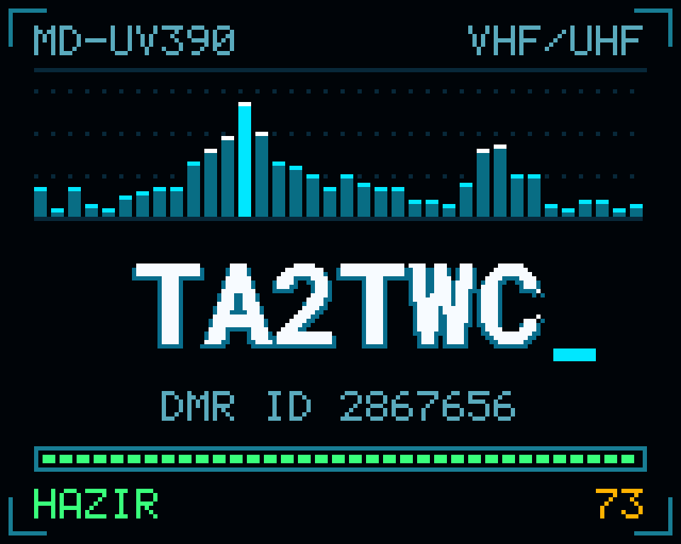
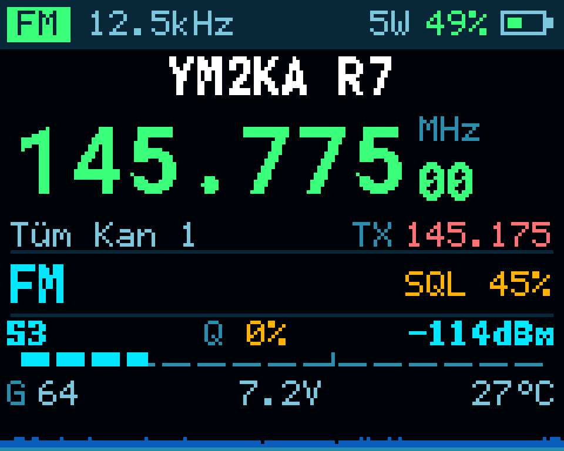
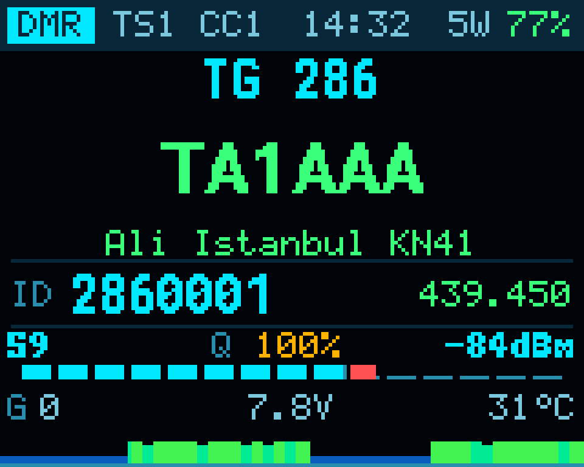
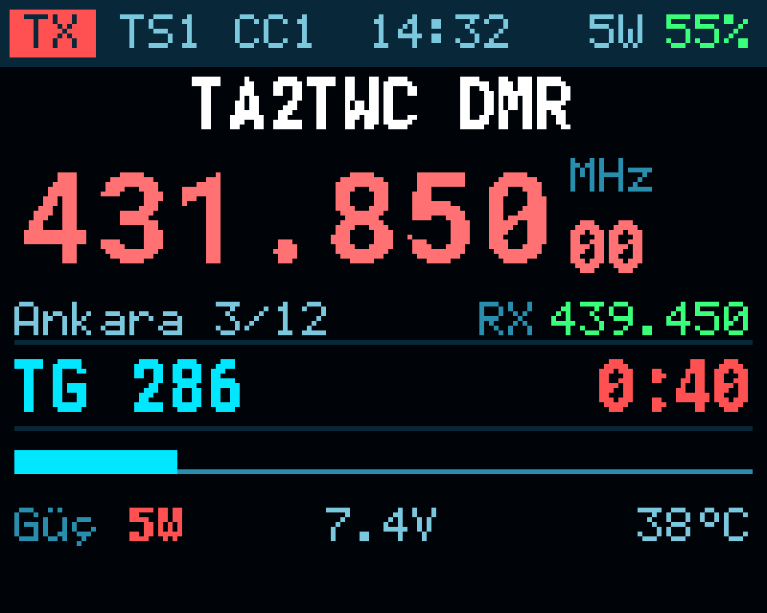
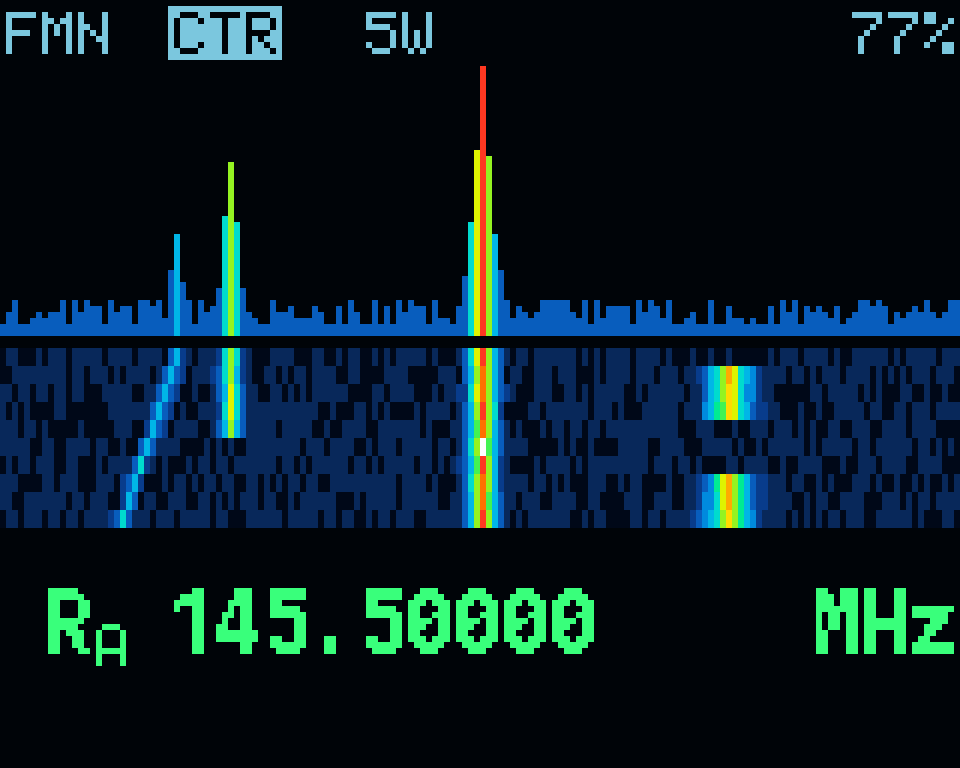
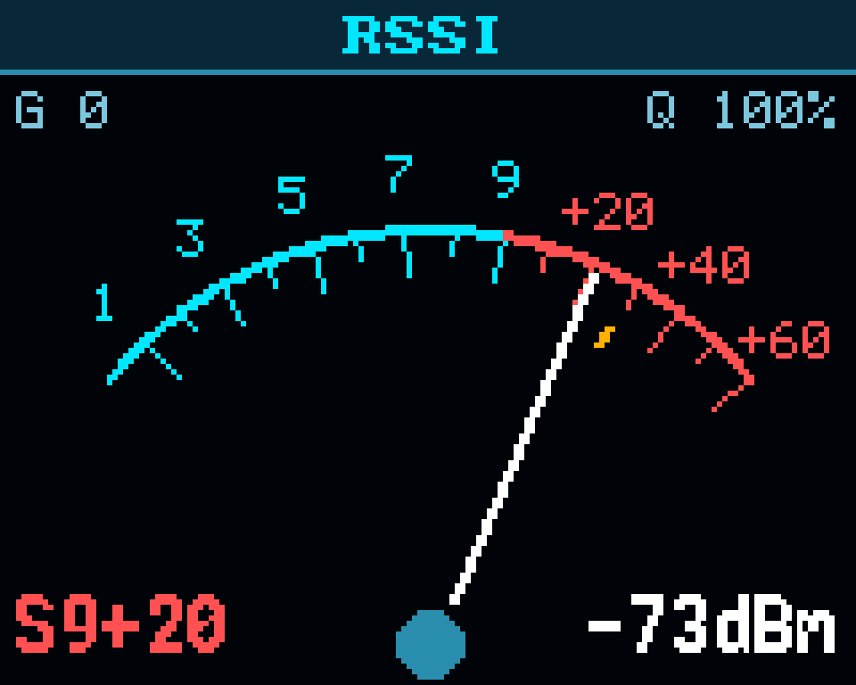
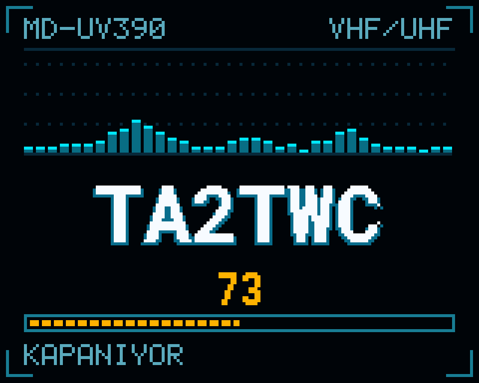
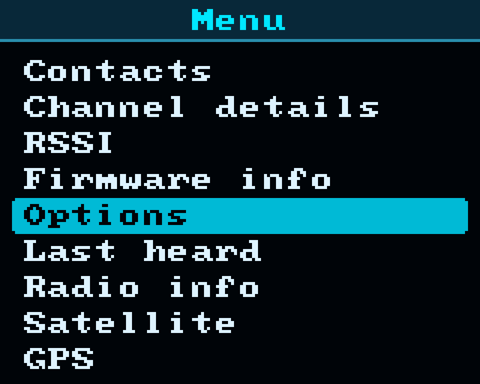
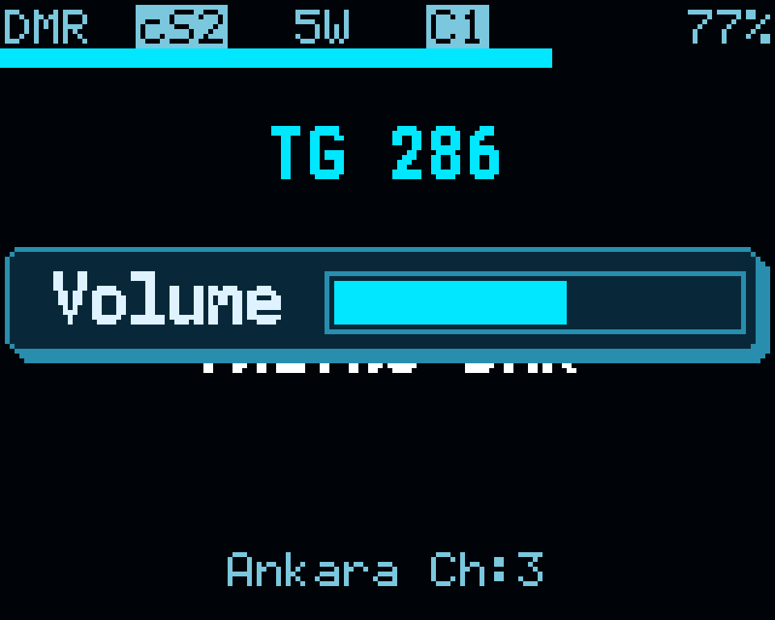
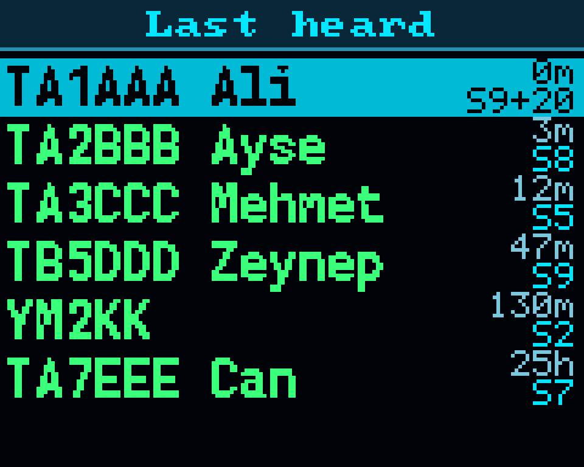

OpenGD77 üzerine eklenen yeni ana ekranı, sinyal göstergelerini, spektrum görüntüsünü ve açılış/kapanış animasyonlarını kendi telsizinize nasıl kuracağınızı ve nasıl kullanacağınızı adım adım anlatır.



Bu kılavuz kimin için? Telsizinde zaten OpenGD77 kurulu olan, Windows bilgisayarda komut satırına birkaç komut yazmaktan çekinmeyen amatörler için. Programlama bilgisi gerekmez; komutlar olduğu gibi kopyalanır.
| 1 | Neler değişti | 2 |
| 2 | Başlamadan önce: gerekenler ve riskler | 3 |
| 3 | Kurulum: yedek, derleme, yükleme | 4 |
| 4 | Kullanım: ekranlar, ayarlar, kısayollar | 6 |
| 5 | Sorun giderme ve eski yazılıma dönüş | 8 |
Yazılımın radyo tarafı (alma, gönderme, DMR, kanal ve kişi yapısı) OpenGD77 ile aynıdır; mevcut kanallarınız ve kişileriniz yerinde kalır. Değişen, ekranda gördükleriniz ve birkaç kullanım kolaylığıdır.
| Yenilik | Ne işe yarar |
|---|---|
| Yeni ana ekran | Büyük frekans, kanal adı, bölge, gönderme frekansı ve tüm teknik değerler tek ekranda. İstenirse menüden klasik görünüme dönülür. |
| Sinyal göstergeleri | S değeri, dBm, sinyal kalitesi (Q %), ham gürültü, pil voltajı ve sıcaklık sürekli görünür. |
| Sinyal geçmişi | Ekranın altında, son dakikalardaki sinyal gücünü gösteren kayan çizelge. |
| DMR çağrı ekranı | Çağrı işareti büyük yazıyla; ad, şehir, DMR kimliği ve konuşma grubu ayrı satırlarda. |
| Gönderme ekranı | Kırmızı TX rozeti, kalan süre çubuğu, FM'de mikrofon seviyesi. |
| Spektrum ve şelale | VFO taramasında renkli spektrum ve altında zaman içinde akan şelale görüntüsü. |
| İbreli S-metre | RSSI ekranında tepe değeri işaretli analog gösterge. |
| Pil yüzdesi | Durum çubuğunda yüzde olarak; seviyeye göre yeşil, turuncu, kırmızı. |
| Küçük menü yazısı | Menülerde 7 yerine 9 satır görünür. |
| Açılış ve kapanış | Çağrı işaretinizin ve DMR kimliğinizin göründüğü animasyonlar. |
| Koyu tema | Varsayılan renkler koyu zemine göre ayarlandı. |
| Türkçe ve İngilizce | Eklenen tüm yazılar iki dilde; dil menüden seçilir. |




Ekran görüntülerinin kaynağı: kapaktaki ana ekran telsizden alınmıştır; diğerleri aynı yazılım kodunun bilgisayarda çizdiği önizlemelerdir ve örnek veriler içerir.
Sorumluluk size aittir. Bu resmi olmayan, gönüllü bir yazılımdır ve hiçbir garanti verilmez. Yalnızca bir cihazda (MD-UV390, 5 W, GPS'siz) denenmiştir. Yedek almadan yükleme yapmayın. Telsizi yalnızca lisansınızın izin verdiği frekans ve güçlerde kullanmak sizin sorumluluğunuzdadır.
| Ne | Açıklama |
|---|---|
| Bilgisayar | Windows 10 veya 11. (Araçlar Python ile yazıldı; Linux'ta sürücü adımı gerekmez ama denenmedi.) |
| Programlama kablosu | Telsizin USB kablosu. OpenGD77 CPS ile kullandığınız kablo. |
| Proje klasörü | Bu kılavuzla birlikte verilen kaynak kod klasörü. İçinde build.py, tools, MDUV380_firmware bulunur. |
| Python 3 | python.org adresinden. Kurulumda "Add Python to PATH" işaretlenmeli. |
| Arm GNU Toolchain | developer.arm.com adresinden, arm-none-eabi Windows kurulumu (14.2 sürümüyle denendi). Varsayılan klasöre kurmanız yeterli. |
C:\md390).Komutların tamamı proje klasöründe, bir komut penceresinde çalıştırılır. Klasörü Dosya Gezgini'nde açın, adres çubuğuna powershell yazıp Enter'a basın.
pip install pyserial pillow pyusb libusb-package
Bu adım bir kez yapılır.
Telsiz açık ve normal çalışır durumdayken USB kablosunu takın.
python tools/radio.py info
Telsizin modeli ve yazılım sürümü görünmelidir. "No radio found" yazıyorsa kabloyu ve telsizin açık olduğunu kontrol edin.
python tools/radio.py backup
On dakika kadar sürebilir. Telsizin yazılımı, kanal hafızası ve fabrika kalibrasyonu backup\<tarih> klasörüne kaydedilir. Bu klasörü ayrıca güvenli bir yere de kopyalayın.
Bu adımı atlamayın. Hem geri dönüş için hem de sonraki adımda DMR ses kodeğini almak için bu yedek gereklidir.
Açılış ve kapanış ekranındaki çağrı işareti kaynak kodda yazılıdır. Şu dosyayı Not Defteri ile açın:
MDUV380_firmware\application\include\user_interface\uiBootAnimation.h
Aşağıdaki satırda tırnak içindeki yazıyı kendi çağrı işaretinizle değiştirip kaydedin (en çok 9 karakter, Türkçe karakter kullanmayın):
#define BOOT_ANIMATION_CALLSIGN "TA2TWC"
DMR kimliğiniz için bir şey yapmanız gerekmez; telsizdeki kayıtlı kimlik otomatik gösterilir.
python build.py python tools/make_image.py
İlk komut yazılımı derler (birkaç dakika). İkincisi, yedeğinizdeki DMR ses kodeğini ve Türkçe dil dosyasını ekleyip yükleme dosyasını release klasörüne yazar. Ekranda dosyanın adı görünür; 7. adımda bu adı kullanacaksınız.
Ayrıca backup\<tarih>\restore_firmware.bin oluşur: bu, telsizinizdeki eski yazılımdır ve geri dönüş için saklanır.
Yalnızca ilk seferde Windows'a sürücü tanıtmak gerekir. Komut penceresini yönetici olarak açıp şunu çalıştırın:
python tools/winusb_dfu_driver.py
"OK: WinUSB driver installed" yazmalıdır. Bu komut, Windows'un kendi WinUSB sürücüsünü telsizin yükleme moduna atar; internetten sürücü indirmez.
Telsizin görünüp görünmediğini denetleyin:
python tools/flash.py --list
Listede 0483:df11 görünmelidir.
5. adımda ekranda gördüğünüz dosya adını yazın:
python tools/flash.py release\TA2TWC_MDUV390_xxxxxxx.bin
Yaklaşık 20 saniye sürer. "100% complete" yazınca telsizi kapatıp tuşlara basmadan yeniden açın.
Yükleme sırasında kabloyu çıkarmayın ve telsizi kapatmayın. Yarıda kalırsa telaşlanmayın: 6. adımı tekrarlayıp yeniden yükleyin.
| 1 | Durum çubuğu. Mod (FM, DMR, TX), FM'de bant genişliği, DMR'de zaman dilimi (TS) ve renk kodu (CC), güç, pil yüzdesi. |
| 2 | Kanal adı. |
| 3 | Alış frekansı. Gönderirken kırmızıya döner ve gönderme frekansını gösterir. |
| 4 | Bölge ve kanal sırası, sağda gönderme frekansı. |
| 5 | Mod bilgisi. FM'de ton ve susturucu, DMR'de konuşma grubu. |
| 6 | Sinyal. S değeri, kalite, dBm ve çubuk; altında gürültü, pil voltajı, sıcaklık. |
| 7 | Sinyal geçmişi. Yeni değer sağdan girer. Frekans değişince sıfırlanır. |
| Gösterge | Anlamı |
|---|---|
| S3, S9+10 | S-metre değeri. S9'un üstü desibel olarak eklenir ve kırmızı gösterilir. |
| -114dBm | Alınan sinyalin gücü. Sayı sıfıra yaklaştıkça sinyal güçlüdür (-70, -110'dan güçlüdür). |
| Q 0% … 100% | Sinyal kalitesi. Boş kanalda %0'a yakın, temiz bir sinyalde %100. Güçlü ama parazitli bir sinyalde S yüksek, Q düşük görünür. |
| G 64 | Alıcı çipinin ham gürültü değeri. Düşük olması iyidir. Susturucu bu değere göre açılır. |
| 7.2V, 27°C | Pil voltajı ve telsizin iç sıcaklığı. |
Yeni seçenekler Menü → Seçenekler → Ekran Seç. altındadır. Değeri sol/sağ ok ile değiştirin. Telsizde satır adları yer darlığından kısaltılmış yazılır; aşağıda ne işe yaradıklarıyla anılmıştır.
Kaydetmek için yeşil tuş. Menüden kırmızı tuşla çıkarsanız yaptığınız değişiklik geri alınır.
| Ayar | Ne yapar |
|---|---|
| Ana ekran: Yeni / Klasik | Yeni tasarım ile OpenGD77'nin özgün ekranı arasında geçiş. Listenin en sonundadır. |
| Ses göstergesi | Açıkken ses düğmesini çevirdiğinizde ekranda ses çubuğu belirir. Yeni kurulumda açık gelir. |
| Başlıkta saat | Açıksa durum çubuğunda saat görünür; yer kalmadığı için pil ikonu gizlenir, pil yüzdesi kalır. |
| Ters görüntü | Kapalı bırakın; koyu tema bu ayar kapalıyken doğru görünür. |



Merkez frekans, o anda VFO'da yazılı olan frekanstır.
| Belirti | Ne yapmalı |
|---|---|
radio.py "No radio found" diyor | Telsiz açık ve normal modda olmalı (yükleme modunda değil). Kabloyu ve başka bir USB girişini deneyin. OpenGD77 CPS açıksa kapatın; bağlantı noktasını o tutuyor olabilir. |
build.py "arm-none-eabi-gcc not found" diyor | Arm GNU Toolchain kurulu değil ya da varsayılan klasörün dışına kurulmuş. Yeniden, varsayılan klasöre kurun. |
| Derleme, klasör yolundan şikâyet ediyor | Proje klasörünü Türkçe karakter ve boşluk içermeyen bir yola taşıyın (örnek: C:\md390). |
make_image.py "the backup has no AMBE codec" diyor | Telsizinizdeki OpenGD77 yalnızca FM olarak kurulmuş. Önce resmi OpenGD77'yi, resmi TYT yazılım dosyasıyla birlikte (DMR destekli) kurun, sonra yeniden yedek alın. |
flash.py --list "No DFU capable devices found" diyor | Telsiz yükleme modunda değil (ekran karanlık olmalı) ya da sürücü adımı yapılmamış. 6. adımı tekrarlayın; sürücü komutunu yönetici olarak çalıştırdığınızdan emin olun. |
| Windows "Bu cihaza bir sürücü yüklenemiyor (STTub30)" diyor | Eski ST sürücüsü yeni Windows'ta engelleniyor. winusb_dfu_driver.py bunu Windows'un kendi sürücüsüyle değiştirir. |
| Yüklemeden sonra ekran açılmıyor | Telsizi tuşlara basmadan açtığınızdan emin olun. Yine açılmıyorsa yükleme moduna alıp yeniden yükleyin ya da eski yazılıma dönün. |
| FM çalışıyor, DMR'de ses yok ya da bozuk | Ses kodeği yedekten doğru alınamamış. Eski yazılıma dönün, DMR'nin orada çalıştığını doğrulayın, yeni bir yedek alıp 5. adımdan devam edin. |
| Ses çubuğu görünmüyor | Ekran Seç. menüsünde ses göstergesini açın ve yeşil tuşla çıkın. |
| Renkler ters ya da soluk | Ekran Seç. menüsünde ters görüntüyü kapatın. |
Kurulumun 5. adımında yedek klasörünüzde restore_firmware.bin oluşmuştu. Telsizi yükleme moduna alın (kurulum 6. adım) ve şunu çalıştırın:
python tools/flash.py backup\<tarih>\restore_firmware.bin
Telsiz, yedek aldığınız andaki yazılımına döner. Ayarlar yine sıfırlanır; kanallar kalır.
Yedek klasöründe neler var? mcu_rom.bin (yazılım ve ses kodeği), spi_flash.bin (kanallar, kişiler, DMR kimlik veritabanı), calibration.bin ve flash_security_registers.bin (fabrika kalibrasyonu). Kalibrasyon her telsize özeldir; bu klasörü silmeyin.
Kaynak kodda değişiklik yapacaksanız, telsize yüklemeden ekranların nasıl görüneceğini bilgisayarda görebilirsiniz:
pip install unicorn python sim/preview.py
Görüntüler sim\out klasörüne yazılır. Telsiz bağlıyken gerçek ekranın görüntüsünü almak için: python tools/radio.py screenshot
Bu yazılım OpenGD77 projesine dayanır (Roger Clark VK3KYY, Daniel Caujolle-Bert F1RMB ve katkıda bulunanlar). OpenGD77 lisansı kaynak kodun değiştirilmesine ve paylaşılmasına izin verir, ancak ticari kullanımı yasaklar: yazılım satılamaz, yazılım yüklenmiş cihaz bu yazılım gerekçesiyle ücretlendirilemez. Kaynak dosyalardaki telif bildirimleri korunmalıdır. Lisansın tam metni proje klasöründeki license.txt dosyasındadır.
DMR ses kodeği (AMBE) bu projenin parçası değildir ve kaynak kodda bulunmaz; her kullanıcı kendi telsizindeki kopyayı kullanır.
İyi görüşmeler, 73 · TA2TWC